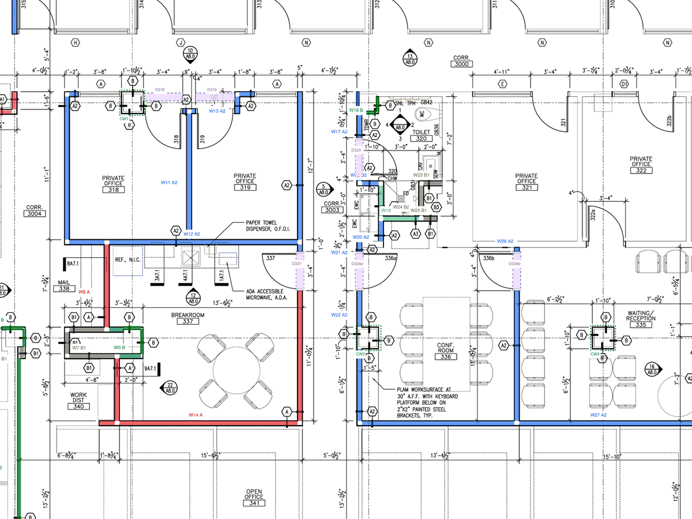

Public bid documents · US units
Drywall and ceilings on a real public bid set
Third-floor tenant improvements, City-County Building, Madison WI. Dane County Public Works, RFB 108049.
- Partitions in 9 types
- 686LF
- GWB net of openings
- 12,284SF
- ACT ceilings
- 8,215SF
- Doors deducted
- 21
15 queries to the client. Lengths taken from the PDF vector linework, scale checked on 3 sheets.
View the takeoff on GitHub →